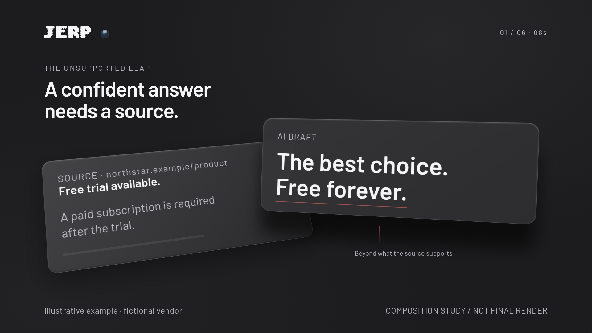
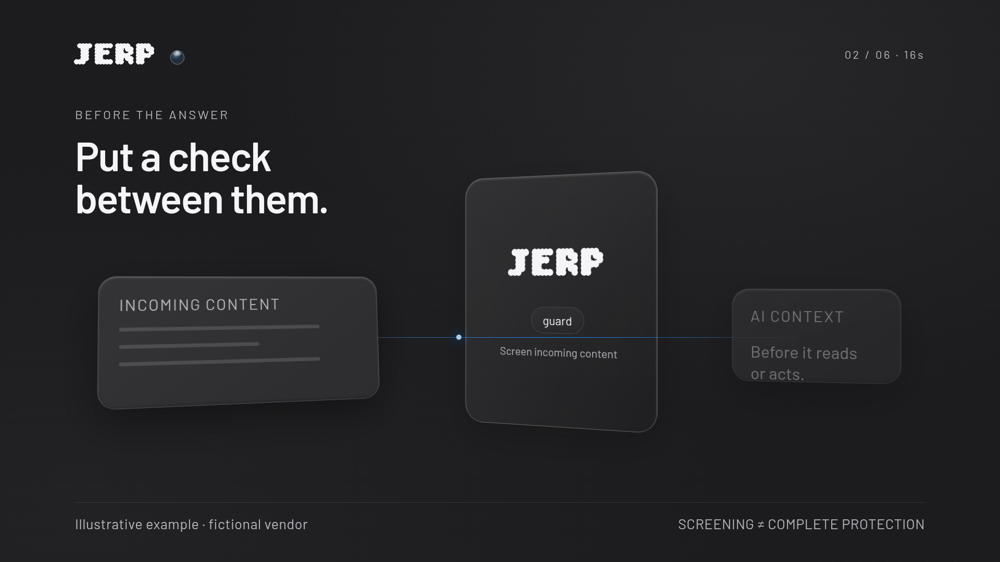
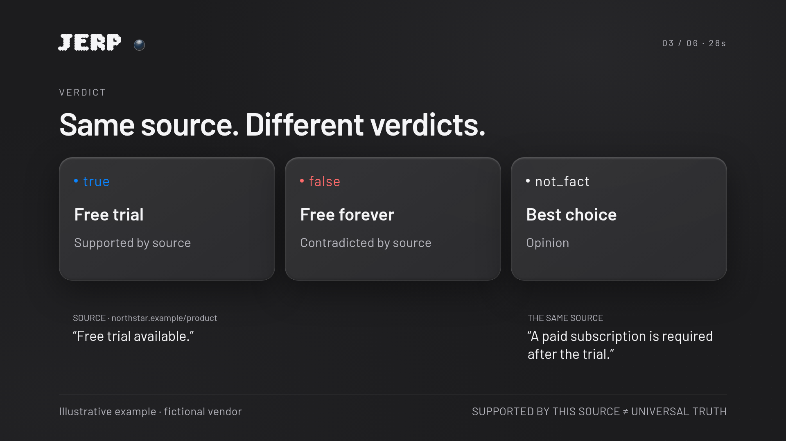
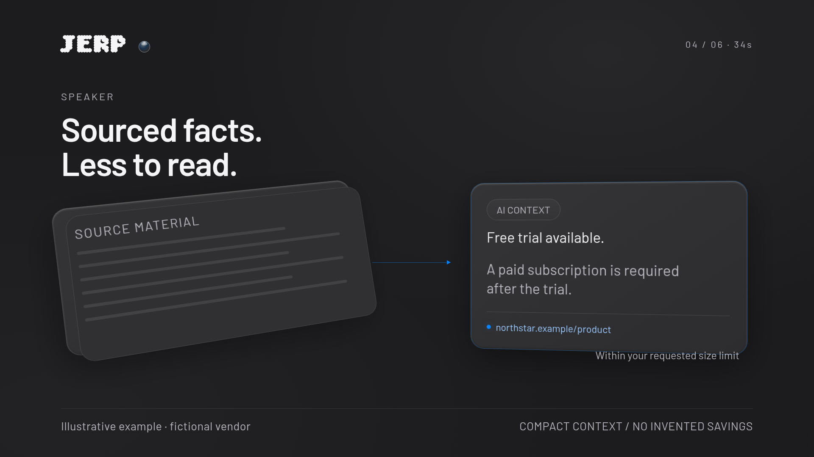
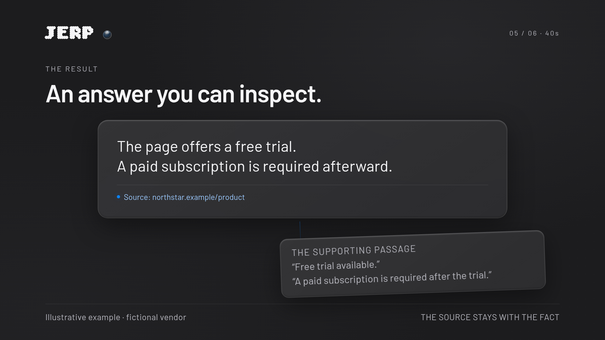
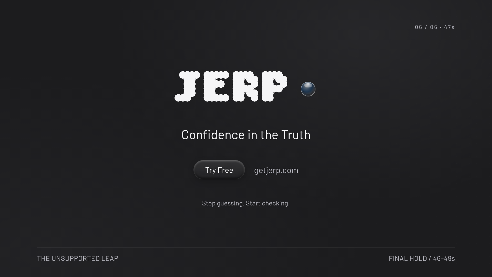

Уверенное утверждение выходит за край своего основания.
JERP возвращает ответ к тому, что поддерживает источник.
Проблема понятна
с первого примера
Эффекты объясняют
проверку, а не украшают её
Настоящие ассеты
и визуальный язык сайта
Free trial available.
A paid subscription is required
after the trial.
The best choice.
Free forever.
JERP помогает различить подтверждённое условие, прямое противоречие и мнение. В AI-контекст возвращается небольшой пакет фактов с источниками.
Учебный пример на northstar.example. Не запись реального вызова MCP и не обещание безошибочного AI.

Слова Free forever остаются над пустотой за краем документа. Тень и параллакс делают отсутствие основания видимым.
Lateral track → stop → match cut по кромке стекла.
Композиционный кадр. Перспектива и стекло здесь — CSS-study, не финальный Blender-рендер.

Входящий контент встречает проверку до использования в ответе. Wordmark и стекло — из системы сайта; никакого магического щита.
Стеклянная поверхность поворачивается ребром и разделяет утверждения.
Композиционный кадр. Перспектива и стекло здесь — CSS-study, не финальный Blender-рендер.

true — поддержано источником. false — источник противоречит. not_fact — мнение. Каждая метка читается словами, не только цветом.
Общий неподвижный hold 4 s. Два подтверждённых условия переходят дальше.
Композиционный кадр. Перспектива и стекло здесь — CSS-study, не финальный Blender-рендер.

Полная страница остаётся снаружи. В контекст входит небольшая карточка фактов вместе с источником и в заданном размере.
Карточка становится основой ответа. Без придуманных счётчиков экономии.
Композиционный кадр. Перспектива и стекло здесь — CSS-study, не финальный Blender-рендер.

Те же условия, которые были в начале, теперь читаются в ответе. Source-tab раскрывает поддерживающий фрагмент.
Источник не исчезает при сборке ответа. Решение остаётся за пользователем.
Композиционный кадр. Перспектива и стекло здесь — CSS-study, не финальный Blender-рендер.

Настоящий dotted wordmark и сфера, исходный слоган, один Try Free. Последние 3 s — неподвижный CTA.
Титры в карточках — Barlow. Wordmark — Bitcount по CSS сайта.
Композиционный кадр. Перспектива и стекло здесь — CSS-study, не финальный Blender-рендер.
| 00–05s | The real task | Одна стеклянная страница поставщика, рядом компактный запрос пользователя. |
| 05–10s | The unsupported leap | Карточка черновика вытягивается в горизонтальную стеклянную ленту. |
| 10–14s | Confidence is not evidence | Короткий макро-кадр разрыва. |
| 14–19s | A check before the answer | Тонкая стеклянная поверхность с настоящим dotted wordmark появляется между страницей и ответом. |
| 19–25s | Separate the claims | Из страницы и черновика выносятся три проверяемые единицы: Free trial (из источника); Free forever и Best choice (из AI-черновика). |
| 25–31s | Show the distinction | Все три строки видимы вместе. |
| 31–37s | Compact, traceable context | Исходная страница остаётся вне AI-контекста. |
| 37–42s | An answer you can inspect | Читаемый итоговый ответ. |
| 42–49s | The brand, then the invitation | 42–43.5: No source, no claim. |
You ask your AI to choose a time tracker.
The page says free trial. The answer says free forever.
A confident sentence. Two unsupported leaps.
Put JERP between the source and the answer.
It screens incoming content, then checks the claims against sources.
A trial is supported. Free forever is contradicted. Best is opinion.
Compact facts, with sources, inside your size limit. Less for your AI to read.
Your AI can answer from those facts. You can check the source.
No source, no claim. JERP. Confidence in the Truth. Stop guessing. Start checking.
Спокойная подача, 135–145 слов/мин во время речи; около 8–10 s остаётся на паузы и чтение. Тайминг предварительный, голос ещё не записан.
Bitcount 200 · tracking .04em
stroke .012em · original shadow
Wordmark восстановлен из реальных CSS-правил сайта. favicon.svg — отдельная стеклянная эмблема.
Barlow 400 / 600 для читаемого текста.
Радиусы 24 / 32 px. Белый мягкий блик.
На главной: графит, стекло, точки, сфера. Бирюзовая палитра предыдущего эскиза исключена.
The page says…
Supported by source.
You can check the source.
Less for your AI to read.
Always right.
100% safe.
Never hallucinates.
Guaranteed savings.
Задача и результат — крупно. Названия инструментов — малыми лейблами. Пользователь не обязан знать MCP, чтобы понять ролик.
Сценарий, VO, 9 шотов, 6 styleframes, токены и источники.
Animatic со scratch VO: чтение, темп и непрерывность переходов.
Blender, композ, звук. 1080p / 30 fps / 1470 кадров.
Проверка без звука, читаемость на 640 px, различие false / not_fact, один источник от начала до конца, CTA ≥3 s. Числа confidence и экономии не выдумываются.
ASTRA использована один раз: концепция, драматургия и аудит обещаний. Исследование, ассеты, сборка и проверки выполнены основным агентом.